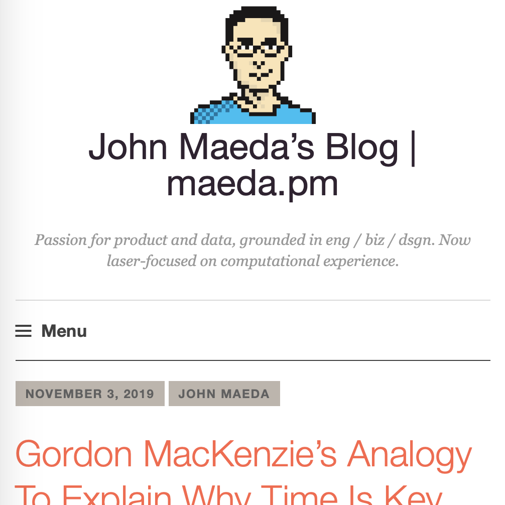

Gordon MacKenzie's Analogy To Explain Why Time Is Key For The Creative Process
Perma🔗 (via @jmwolfinbarger)

I've witnessed this issue before - a place that felt they needed to be hyper focused on productivity, not seeing how some allowed time for creativity might alleviate their problems, or lead them in a newer/better direction. Interesting analogy. Moo-y bueno, if I make a bad pun.
A management obsessed with the productivity usually has little patience for the quiet time essential to profound creativity.
- Prior: The Rise and Fall of “Mentally Retarded”
- Next: One Page Dungeon